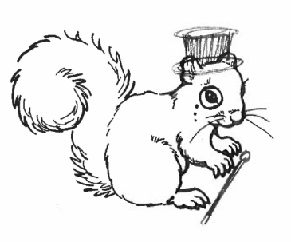
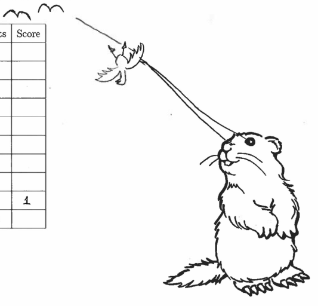
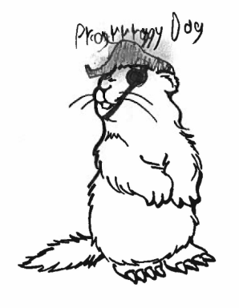
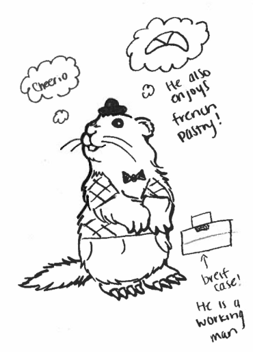
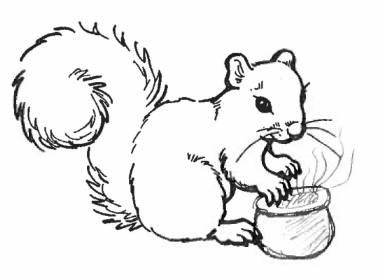
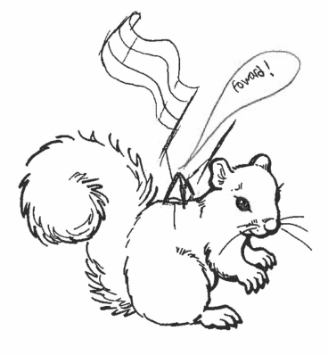

When I give exams, the front is a cover page with exam rules, a table with the point totals for each page, and an exam icon to denote what version of an exam students are taking. Over the past few years, it has become apparent that the exam icons also provide a nice way for students to pass the time while I pass out the rest of the exams, by doodling on them. So, here is a gallery of some of the finest student work! If your doodles didn't make it on here, that's only because there are hundreds of exams, and I can't put them all up. I very much appreciate all doodles - they liven up grading and brighten my cold, dark days!





